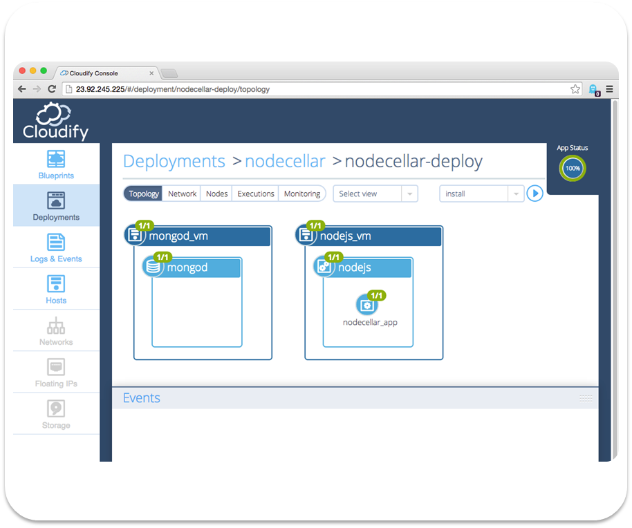
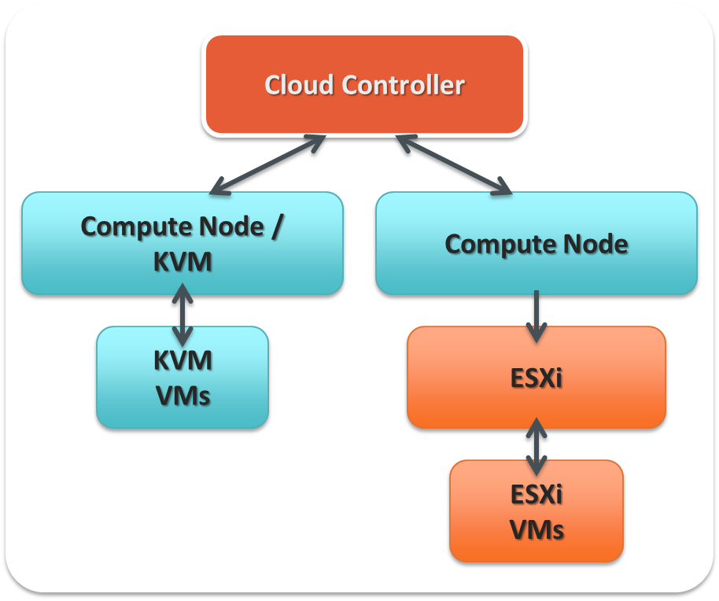
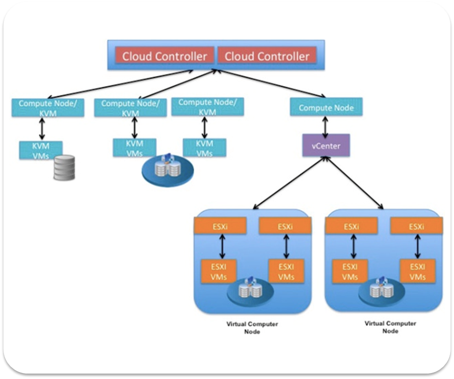
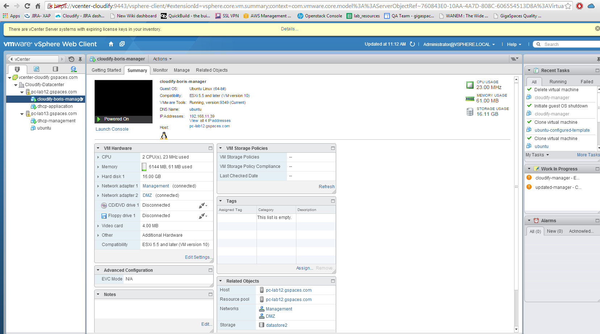

		<section id="content">
			<div class="container">
				<div class="row">
					<div class="span6 no-margin">
						<h1><strong>TOSCA Orchestration</strong>  for VMware</h1>
						<p>VMWare has been a leader of the enterprise virtualization space for many years and is by far the most popular industry solution to date.  On top of their virtualization solutions, VMware has also entered the cloud arena with private and public cloud offerings - from vCloud through vCloudAir.</p>
						<p>Migrating workloads across environments or building a hybrid deployment is no easy task. Different environments come with their own various requirements and tool chains, making multi-cloud deployment cumbersome and complex.</p>
						<p>To that end, we have built our TOSCA orchestration for VMware that allows you to transition and migrate workloads easily between your VMware infrastructure and any cloud - and back again, all with a simple blueprint.</p>
						<p>The underlying challenge lies in the transition and management of existing applications along with the new class of cloud-native applications in heterogeneous environments. </p>
						<br/>
						
						<a class="btn btn-theme btn-large btn-rounded" id="downloadBtnInner" href="/downloads/get_cloudify_3x.html"><i class="icon-download"></i>  Download Now</a>
						&nbsp; &nbsp;
						<a class="btn btn-green btn-large btn-rounded" id="goProInner" href="/guide/3.1/plugin-vsphere.html"><i class="icon icon-book"></i>  vSphere Plugin Docs</a>

					
						</div>
					<div class="span6">
						<!-- start flexslider -->
				<div class="flexslider">
					<ul class="slides">
						<li>
						
						</li>
						<li>
						
						</li>
						<li>
						
						</li>
						<li>
						
						</li>
						
					</ul>
				</div>
				<!-- end flexslider -->
					</div>
				</div>
				</section>
				<section id="content">
				<div class="container">
		
				<div class="row">
				<div class="span12">
				<hr/>
					
					<h2>Transition Easily to the Cloud of Your Choice with our VMware Plugin</h2>
					<p> When it comes to VMware adoption there are mainly three cloud platforms:</p>
					<ul>
					<li>vCenter and vSphere that provide virtualization services for traditional data centers, and generally the most widely adopted VMware platform.</li>
					<li>vCloud and vCloudAir provide cloud-oriented services on top of vSphere. vCloudAir is the VMware public cloud offering based on the vCloud API.</li>
					<li>VMware – OpenStack provides an OpenStack compatible interface on top of vSphere/vCenter.</li>
					</ul>


					<p>That's why it was an important target for Cloudify to be able to expand its already broad support of cross-cloud orchestration, to support VMware's virtualization and cloud offerings. Cloudify provides TOSCA-based orchestration that support all three platforms as outlined in the diagram below.</p>
					<p>VMware vCloud Air adds a unique solution for the integration of public cloud resources into a private cloud environment as a native extension of the existing data center.</p>


					<p>With this integration VMware users can automate the deployment, management and monitoring of both simple web applications through large-scale applications such as microservices, big data applications, stream processing as well as legacy applications.</p>
					<p>Cloudify supports a range of application packaging and configuration management starting from a simple script based packages to Chef, Puppet, SaltStack and now also Docker.  This allows VMware users to leverage their existing investment in any of those frameworks and include Cloudify as a complementary platform to their existing environment.</p>
					<p>The support for all three VMware environments provides VMware users with a common management and automation framework. This makes it possible to easily build a VMware hybrid cloud with vCloudAir as the public cloud, and vSphere/vCenter or even OpenStack as private cloud.</p>

					<br/>
					<div class="aligncenter">
					</div>

					<br/>

					<p>As many VMware users tend increasingly towards the hybrid cloud, Cloudify’s integration with VMware vCloud Air delivers a single point of management and orchestration across the VMware cloud offering. The integration between vCloud Air and Cloudify allows users to seamlessly migrate workloads across heterogeneous environments or build a hybrid deployment that runs simultaneously on vCloud Air and OpenStack, vCenter/vSphere or any other cloud of choice. </p>

					<p>TOSCA (Topology and Orchestration Specification for Cloud Applications) provides an industry standard format for describing an application blueprint. Using the TOSCA standard as its templating language, Cloudify makes irrelevant any changes at the lower level infrastructure and, thus is able to easily migrate workloads across environments.</p>

					<h3><b>Key Solution Benefits</b></h3>

					<ul>
					  <li>TOSCA-based orchestration for VMware hybrid deployments </li>

					  <li>Topology-driven management and monitoring of an application throughout its lifecycle </li>

					  <li>Integration with any tool chain. </li>
					</ul>

					<p><b></b></p>

					<h3><b>Cloudify’s Secret Sauce</b></h3>

					<p>Cloudify is the only pure-play orchestration framework uniquely positioned to fit into heterogeneous enterprise and Telco environments, and also includes:</p>

					<ul>
					  <li>Support for any application stack, with native OpenStack support </li>

					  <li>Support for containerized (via Docker) and non-containerized workloads </li>

					  <li>Deployment modeling using standard TOSCA blueprints </li>

					  <li>Support for comprehensive monitoring </li>

					  <li>Built in auto-healing and auto-scaling policies for deployed applications </li>

					  <li>Support for DevOps related tool chains. </li>
					</ul>

					<div class="well">
						
					<h3><b>Use Cases</b></h3>

					<p>Cloudify wears many hats, serving as an orchestration framework for</p>

					<ul>
					  <li>Cloud Orchestration </li>

					  <li>SaaS Enablement </li>

					  <li>Network Functions Virtualization (NFV) </li>

					  <li>Private PaaS </li>

					  <li>Disaster Recovery </li>

					  <li>Big Data Management </li>

					  <li>Marketplace Framework </li>
					</ul>
						
					</div>

				</div>
				</div>
				</div>
			</section>	
			<section id="bottom">
			<div class="container">
				<div class="row">
				<div class="span12">

			<h2><b>How it Works</b></h2>
			 

			<p><b>Step 1: Model Your Application</b></p>

			<p>Standards-based blueprint, provision VMs, configure network</p>

			<p><b>Step 2: Install your Application</b></p>

			<p>Integrate with Chef, Puppet, Docker, SaltStack</p>

			<p><b>Step 3: Manage Your Application</b></p>

			<p>Add monitoring, logging, alerts, execute workflow for updates, patches, etc.</p>

			<p><b>Step 4: Add Auto-Healing, Auto-Scaling</b><b></b></p>

			<p>Continuously detect and correct failure, add more capacity </p>

								<hr/>

						<h2><strong>Getting Started</strong></h2>
						<hr/>
						<br/>
						<ul>
								<li><a href="/guide/3.1/plugin-vsphere.html" target="_blank">Getting Started with Cloudify and vSphere</a></li>
								<li><a href="http://getcloudify.org/2014/11/12/vmware-vsphere-vcloud-openstack-hybrid-cloud.html" target="_blank">From VMWare Virtualization to Public Cloud. Now Hybrid Cloud.</a></li>
								<li><a href="http://getcloudify.org/2014/11/07/openstack-vmware-hybrid-cloud.html" target="_blank">The VMware OpenStack Cloud Conundrum</a></li>
								</ul>
								<br/>
				<div class="aligncenter">
				
				</div>
				<br/>

					
				<hr/>
				<div class="row">
		<div class="span2"></div>
		<div class="span8">
				<div class="aligncenter">
				<p>To learn more about Cloudify with vCloud Air visit the vCloud Air Marketplace at <a href="https://solutionexchange.vmware.com/" target="_blank">solutionexchange.vmware.com</a> or try Cloudify today.</p>
						<br/>
							<a class="btn btn-large btn-green btn-rounded" id="goProInner" href="/goPro.html"><i class="icon-plus"></i>  Go Pro!</a>
							&nbsp; &nbsp;
							<a class="btn btn-large btn-theme btn-rounded" id="downloadBtnInner" href="/downloads/get_cloudify_3x.html"><i class="icon-download"></i>  Download Now</a>
							<br/>
							</br>
							</div>
						</div>
						</div>
						<div class="span2"></div>
					</div>
					</div>
					</section>
					<div class="clear"></div>
</section>
